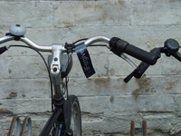
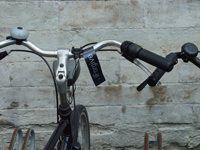
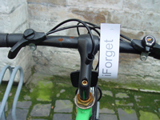
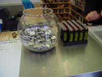
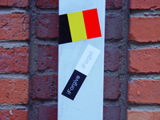
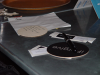
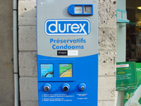
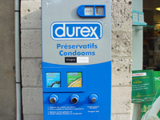
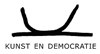

BARKING DOGS UNITED
----------------------------------------------------------------------------------------------------------------------------
NEWS ABOUT PROJECTS TEXT LINKS CONTACT
| Artist
Duo BARKING DOGS UNITED ---------------------------------------------------------------------------------------------------------------------------- NEWS ABOUT PROJECTS TEXT LINKS CONTACT |
| Please
select a project: 2008 What We Is Want What You Want SIZE MATTERZ 2007 Bis Auf Weiteres... 2006 On A Spaceship With No Fuel And No Future Carwash iForgive / iForget 2005 The Wild Bunch |
"iForgive / iForget" Intervention in public space, Leuven, Belgium. A project by Nikos Arvanitis, Naomi Tereza Salmon. iWhat A campaign based on the ubiquitous advertising from Macintosh computers and accessories - especially on the design of the new iPod. Black and White buttons, bicycle stripes, beer coasters and stickers carrying the message iForgive / iForget were produced. The promotion articles were located at the "Kulturama" info point, in selected music and bookstores, bars and cafés, or attached to bicycles or strategically placed in public space. The public could choose which of the two messages they want to carry, display, store or distribute further. iWho Adressed is the Black/White problematic; the issue of the slumbering conflict in Belgian society between the collaborators and the resistance during the time of the Nazi occupation. Black and white still serves as status symbol within the local system.The intention of the work was to initiate a shift, so that the "Whites" who can forgive, could forget, and the "Blacks" which would rather forget, could forgive. iWhy What you get for free costs more. Headless consumerism reflects itself in certain currents of capitalism as the next social problem, selling the materialistic illusion that we can have anything we want. We forget, and at the same time forgive the system for making profit on our behalf, offering emptiness in exchange for cash. This was a virtual campaign concept for a product that hasn't been produced yet. The campaign products were not for sale, but were displayed for free distribution.  
     
© Photos: Naomi Tereza Salmon We thank Kunst en Demokratie, Brussels for their support.  All content copyright 2005 Nikos Arvanitis + Naomi Tereza Salmon - all rights reserved |